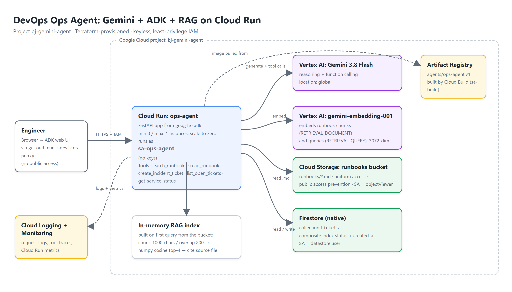

Google Cloud portfolio · Project 1 of 3
An internal assistant that answers from the team's runbooks with citations, opens incident tickets in Firestore and reports service health. Deployed on Cloud Run with a keyless, least-privilege identity and provisioned end-to-end with Terraform.
Narrated walkthrough: security posture → runbook question with citation → tool trace → ticket creation → Firestore console → Terraform.
Transcript: demo/transcript.md · Captions: demo/captions.srt. Narration is generated with Cloud Text-to-Speech (Chirp 3 HD); the screen capture is driven by Playwright so every run is reproducible.
One Cloud Run service, four managed backends, one service account.

terraform apply. The agent never holds a credential: Cloud Run attaches sa-ops-agent and the Google client libraries pick it up.ADK FastAPI app with the dev web UI. 1 vCPU / 1 GiB, min 0, max 2 instances, startup probe on /dev-ui/. Ingress all, but no allUsers invoker.
Gemini 3.8 Flash from the global location for reasoning and function calling; gemini-embedding-001 for 3072-dim runbook and query embeddings.
Private bucket with runbooks/*.md (uniform access, public access prevention). Firestore native mode holds the tickets collection with a composite index.
Image built by a dedicated sa-build account with only registry-writer and log-writer roles, pushed to the agents repository.
What happens when an engineer asks “CouchDB crashed on prod, what are the recovery steps?”
read_runbook made the model search ten times to reassemble a procedure from 800-character chunks.Small, explicit and testable. No vector database until the corpus needs one.
Runbook steps are 1-3 lines; a 1000-character window keeps a whole section together, the overlap keeps numbered lists from splitting mid-step.
Retrieval decides which runbook; the full document gives the model complete, ordered steps. Two cheap calls beat ten partial ones.
Five runbooks → 18 chunks → a 18×3072 matrix. Rebuilt lazily on the first query per Cloud Run instance; no database to run or pay for.
Hundreds of documents, multiple tenants or fresh updates every minute: move to Vertex AI RAG Engine or BigQuery vector search and add re-ranking.
Plain Python functions; ADK turns the signature and docstring into the function-calling schema.
| Tool | Backend | What it does |
|---|---|---|
search_runbooks(query) | Vertex AI embeddings | Semantic search over runbook chunks; returns source, score, excerpt. |
read_runbook(file_name) | GCS (cached) | Full text of one runbook so the answer has every step in order. |
create_incident_ticket(title, severity, summary) | Firestore | Validates severity P1-P4, writes a document, returns its id. Backend errors are returned to the model instead of crashing the turn. |
list_open_tickets() | Firestore | Open tickets newest first via a composite index on status + created_at (created by Terraform). |
get_service_status(service) | Mock status API | Deterministic health for the demo; same signature you would wire to Cloud Monitoring uptime checks. |
RequiresMountsFor hardening.Least privilege, no keys, no public endpoint.
| Control | Implementation | Verified by |
|---|---|---|
| Private service | No allUsers / allAuthenticatedUsers invoker on Cloud Run. | curl without a token → 403; gcloud run services get-iam-policy is empty. |
| Keyless identity | Runtime SA sa-ops-agent attached to the service; ADC locally; sa-build in Cloud Build. | gcloud iam service-accounts keys list --managed-by=user → 0 items. |
| Least privilege | roles/aiplatform.user, roles/datastore.user at project level; roles/storage.objectViewer on the bucket only. | gcloud projects get-iam-policy filtered by member. |
| Private data | Bucket: uniform bucket-level access, public access prevention enforced. | Terraform config; console shows “Public access: Prevented”. |
| Hardened container | Non-root user, pinned dependencies, no secrets in the image. | Dockerfile, .dockerignore excludes *.json/.env. |
| Access path | gcloud run services proxy mints an identity token for the operator; IAP is the multi-user equivalent. | Demo scene 2. |
26 resources in Terraform; two-phase apply because Cloud Run needs an image and the image needs a registry.
deploy.sh applies the registry/build/Firestore targets, runs Cloud Build, then applies the rest.app/ container: ADK FastAPI app (main.py) + agent package
ops_agent/agent.py root_agent = Agent(model, instruction, tools=[...], thinking_level=low)
ops_agent/rag.py load (GCS or local) → chunk → embed → in-memory cosine search
ops_agent/tickets.py Firestore tools (validation + error surfacing)
ops_agent/status.py mock status tool
test_agent.py run the agent from the CLI with the ADK Runner
runbooks/ 5 sample runbooks
terraform/ APIs, SAs + IAM, bucket + objects, Firestore + index, registry, Cloud Run
cloudbuild.yaml image build as sa-build (CLOUD_LOGGING_ONLY)
deploy.sh two-phase apply
demo/ recorder.py + scenes.py (Playwright + Cloud TTS), demo.mp4, captions, transcript
docs/ this page, architecture diagram source + PNGAbout 10 minutes on a fresh project. Idle cost is zero (Cloud Run scales to zero; Firestore and GCS stay in the free tier).
gcloud auth login && gcloud auth application-default login.cp terraform/terraform.tfvars.example terraform/terraform.tfvars and set project_id. Models default to gemini-3.8-flash (location global) and gemini-embedding-001../deploy.sh v1: phase 1 creates the registry, build account and Firestore; Cloud Build pushes the image; phase 2 creates the bucket, runtime SA, IAM and the Cloud Run service.gcloud run services proxy ops-agent --region us-central1 --port 8080, then browse http://localhost:8080/dev-ui/. The proxy injects your identity token; the service itself stays private.pip install -r app/requirements.txt, export GOOGLE_GENAI_USE_VERTEXAI=TRUE GOOGLE_CLOUD_PROJECT=… GOOGLE_CLOUD_LOCATION=global, then cd app && adk web. Without RUNBOOKS_BUCKET the runbooks are read from disk.terraform -chdir=terraform destroy removes all 26 resources.The parts that were not in the docs.
globalEvery gemini-3.* model returned 404 from us-central1; the SDK must target the global location. Embeddings and the rest of the stack stay regional.
On Vertex AI, gemini-embedding-2 returned one vector for a 20-text batch. The index silently collapsed to one chunk and every query matched the same runbook. rag.py now asserts len(vectors) == len(texts).
Gemini 3.8 Flash with default thinking took 30-100 s per tool round; thinking_level=low brings a full search → read → answer turn to about 10 s with no loss in tool accuracy.
Chunk retrieval alone made the model search ten times to rebuild one procedure. A second tool that returns the whole document cut turns from 90 s to 2 tool calls.
Cloud Build's default service account had no permissions under the org policies; a dedicated sa-build with three roles and CLOUD_LOGGING_ONLY fixed it cleanly.
A missing Firestore index crashed the whole turn. Tools now catch backend errors and return {"error": …} so the agent can explain instead of dying.